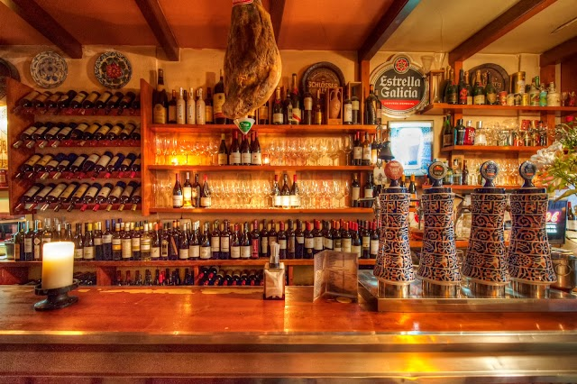
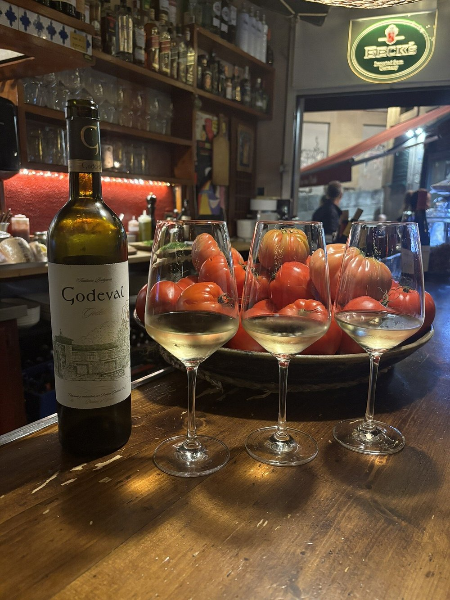
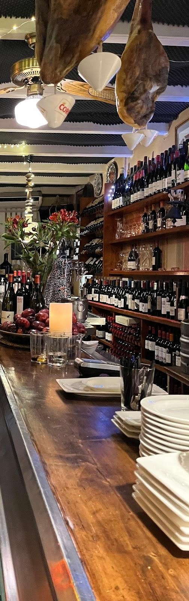
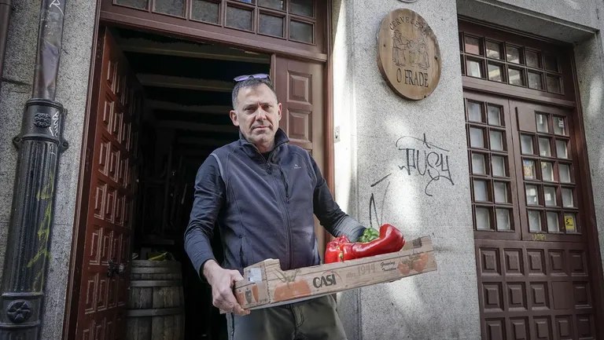
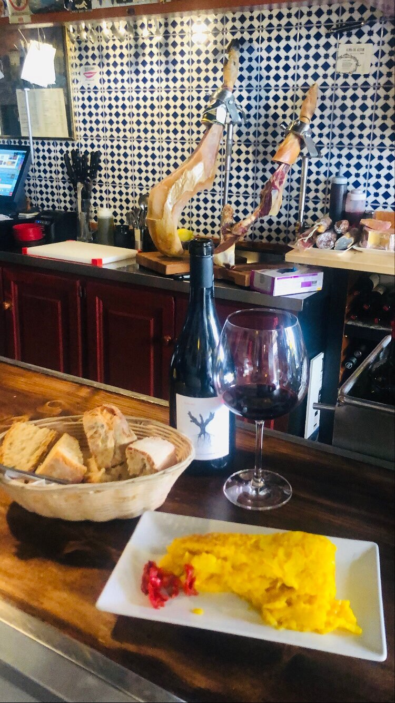
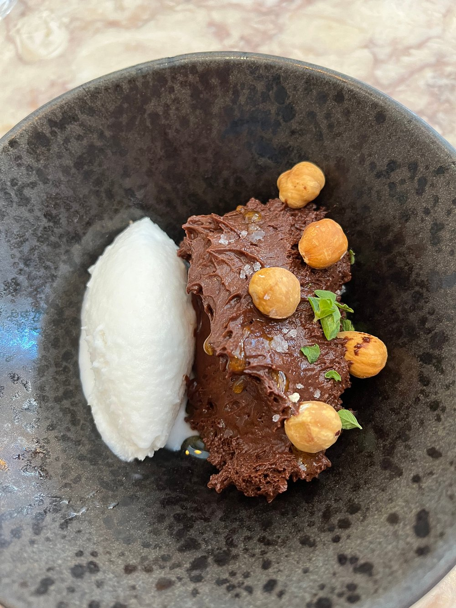

Casco Histórico de Ourense · Calle de los Vinos
O Frade
Vinoteca · Tapería
En plena calle de los vinos del casco histórico, la tortilla confitada que todo Ourense recomienda, una copa de Godello y el trato cercano de Kike e Iago.
Quiénes somos
Como en casa, con una copa en la mesa
Kike e Iago llevan la casa en la Rúa dos Fornos, en pleno corazón de la calle de los vinos de Ourense. Aquí la tortilla confitada se ha convertido casi en leyenda — la piden hasta quienes vienen por primera vez sin saberlo.
Contestan cada reseña de Google con su nombre, agradecen una a una las visitas y ponen la misma atención en una caña que en una copa de Godello. Se nota en cuanto entras.
"No es fácil encontrar un sitio con el que conectes a muchos niveles" — así lo cuenta una clienta habitual en Google.

Lo que dicen en Google
Los clásicos
La tortilla, y lo de siempre alrededor
La tortilla confitada, la copa de Godello y la calle de los vinos — así se vive esto.
La carta
Dos caras, una misma casa
Lo que dicen
Casi ochocientas veces gracias
0
reseñas en Google, con una media de 4,4 sobre 5
Aquí no ponemos frases nuestras en boca de nadie. Si quieres leer lo que escribe la gente, está todo en Google.
Reseñas reales, tal cual se escribieron en Google — pulsa una tarjeta para verla en Google
Producto de la tierra, servido sin prisa — esa es toda la receta.
El sitio
Así es esto por dentro




Dónde estamos
En la calle de los vinos
Dirección
Rúa dos Fornos, 11
Casco Histórico de Ourense
Reservas por teléfono
La terraza y el aforo van por orden de llegada. Si está lleno, espera un poco: casi siempre se libera algo y mientras tanto te ponemos una copa.
Preguntas frecuentes
Antes de venir
¿Puedo reservar mesa?
No cogemos reservas. La terraza y el aforo van por orden de llegada.
¿Tenéis terraza?
Sí, con un pequeño suplemento: 0,20€ por bebida y 0,40€ por plato.
¿Cuál es el horario?
Cambia según la temporada y los festivos, así que lo vamos contando en Instagram — ahí está siempre lo último.
¿Tenéis información de alérgenos?
Sí, en la carta hay iconos orientativos por plato según ingredientes habituales — confirma siempre en barra.
Antes de venir
¿Reservamos mesa?
Se puede reservar por teléfono — no hace falta esperar de pie con la tortilla en la cabeza.
988 23 54 54